STA entities reading tool
This set of tools is used to explore entities in an STA service, so they can only be linked to a node containing STA data. You can only link an entity with a related entity.(To know which entities are linked, consult the schema below)
Any entity can be linked to an STA service node. If you want to explore an entity related to your previous entity, you must ensure that your data contains only one record (by applying the Select row tool, the Filter rows tool, or , with select resource tool or automatically clicking the entity in the table below).
Each time you link an entity,a new request to the API will be made . Every request to the STA service will return 100 records. Double-clicking on this node will display a window where you can enter a number to specify how many records you want to load.
STA Plus schema with Datastream
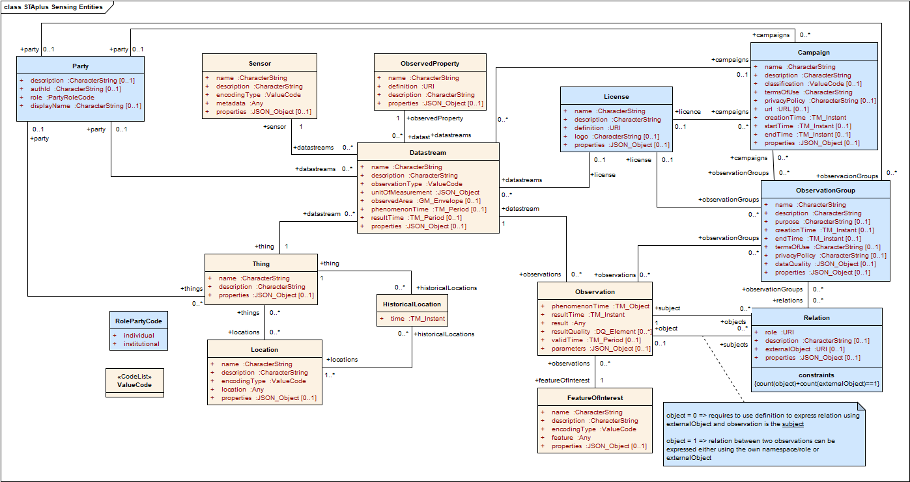
STA Plus schema with MultiDatastream
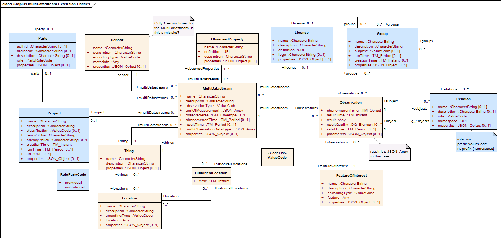
More information about STA Services: https://www.ogc.org/standards/sensorthings/
Campaigns
As with any entity, to view the Campaigns of an STA service, this tool must be connected directly to the STA service or to a related entity following the STA schema. If it is connected to another entity, that entity must contain only a single record. To achieve this, you can use the Select row, Filter rows, or Select resource tool.
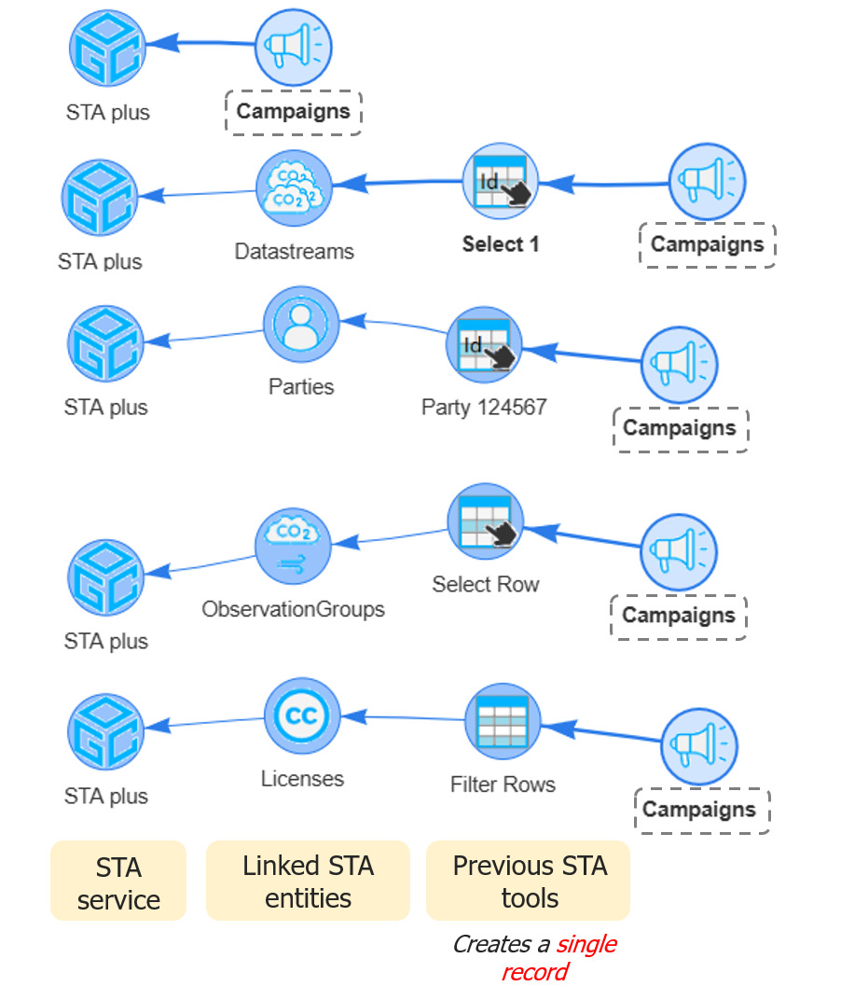
-
Definition: An event or an activity that results in or is linked to
a
collection of MultiDatastream, Datastream, and/or ObservationGroup. A campaign is commonly
limited in space and time and can be managed by one party.
Example: A "Water Quality Summer Campaign" carried out during July and August in a river basin, where multiple Datastreams (e.g., pH, temperature, turbidity) are collected by different sensors and grouped under the same campaign.
- Linked with:Datastreams, MultiDatastreams, Party, License, ObservationGroups
- Properties:
- name (string): required
- description (string): required
- observationType (string): required
- unitOfMeasurement (JSON): required
- observedArea (object): optional
- phenomenonTime (data_isoperiod): optional
- resultTime (data_isoperiod): optional
- properties (JSON): optional
Here is an example of data returned by this node:

Double left-click on the node to open the dialog. By default, 100 records are retrieved from the STA service. Use this dialog to specify a higher number of records.
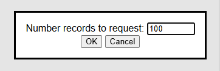
Recipes where this tool is used:
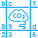
CellsAs with any entity, to view the Cells of an STA service, this tool must be connected directly to the STA service or to a related entity following the STA schema. If it is connected to another entity, that entity must contain only a single record. To achieve this, you can use the Select row, Filter rows, or Select resource tool.

- Definition:
- Properties:
- zoneId (string): required
- zoneLevel (integer): optional
- properties (JSON): optional
- Linked with: Datastreams, MultiDatastreams, Observations
Double left-click on the node to open the dialog. By default, 100 records are retrieved from the STA service. Use this dialog to specify a higher number of records.
Recipes where this tool is used:
No one yet
 Datastreams
Datastreams
As with any entity, to view the Datastreams of an STA service, this tool must be connected directly to the STA service or to a related entity following the STA schema. If it is connected to another entity, that entity must contain only a single record. To achieve this, you can use the Select row, Filter rows, or Select resource tool.
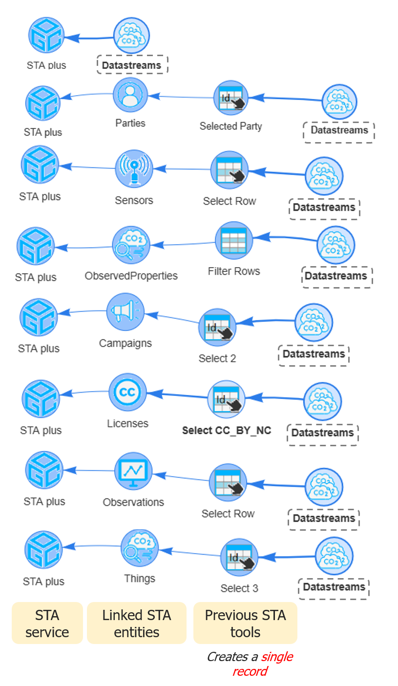
- Definition: A Datastream groups a collection of Observations
measuring
the same
ObservedProperty and produced by the same Sensor.
Example: A temperature Datastream named "Room temperature" from a weather station sensor,
where
each Observation
represents a temperature measurement taken every 10 minutes at the same location
- Properties:
- name (string): required
- description (string): required
- encodingType (string): required
- feature (): required
- properties (JSON): optional
- Linked with: Party, Sensor, ObservedProperty, Campaigns, License, Observations, Thing, Cells
Here is an example of data returned by this node:

Double left-click on the node to open the dialog. By default, 100 records are retrieved from the STA service. Use this dialog to specify a higher number of records.
Recipes where this tool is used:
FeaturesOfInterest
As with any entity, to view the FeturesOfInterest of an STA service, this tool must be connected directly to the STA service or to a related entity following the STA schema. If it is connected to another entity, that entity must contain only a single record. To achieve this, you can use the Select row, Filter rows, or Select resource tool.
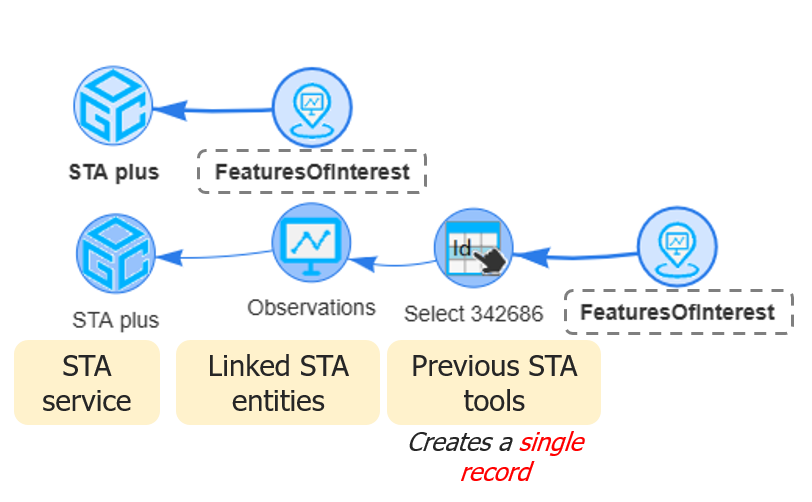
- Definition:A FeatureOfInterest is the real-world entity or
phenomenon on
which an
observation is made and to which the result of the observation is assigned.
It represents the subject being observed, such as a location, object, or spatial region.
In the context of the Internet of Things, the FeatureOfInterest is often the location of the
Thing, for example
the room where a sensor is installed. In remote sensing scenarios, it can represent a
geographic
area or volume
that is being observed.
In short, the FeatureOfInterest is what the observation is about
- Properties:
- name (string): required
- description (string): required
- encodingType (string): required
- feature (): required
- properties (JSON): optional
- Linked with: Observations
Here is an example of data returned by this node:
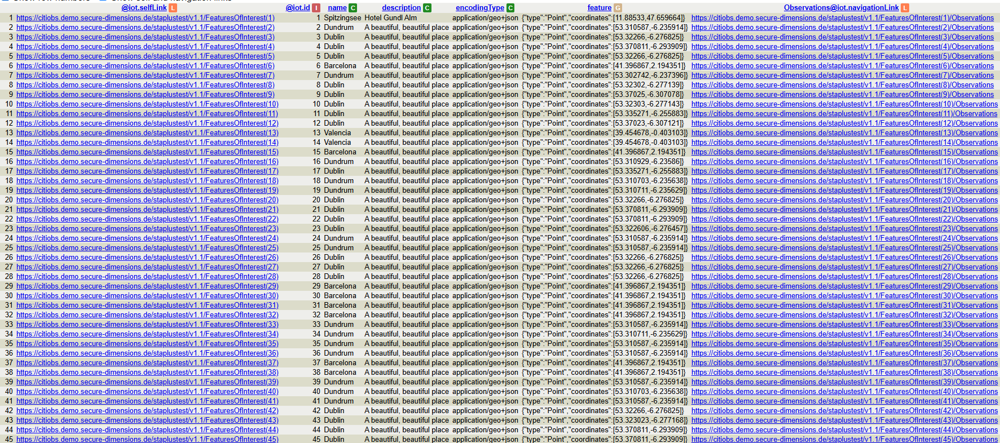
Double left-click on the node to open the dialog. By default, 100 records are retrieved from the STA service. Use this dialog to specify a higher number of records.
Recipes where this tool is used:
 HistoricalLocations
HistoricalLocations
As with any entity, to view the HistoricalLocations of an STA service, this tool must be connected directly to the STA service or to a related entity following the STA schema. If it is connected to another entity, that entity must contain only a single record. To achieve this, you can use the Select row, Filter rows, or Select resource tool.
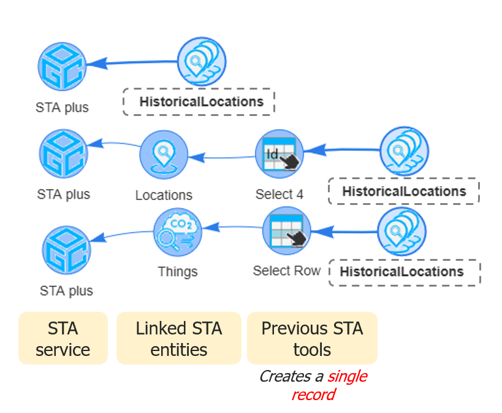
- Definition:A HistoricalLocation represents the record of a Thing’s
past
and current
locations over time. It provides the timestamps of the current (latest known) and previous
locations associated
with the Thing.
This entity is automatically updated by the service whenever a Thing is assigned a new
Location.
- Properties:
- time (isodatetime): required
- Linked with: Thing, Locations
Here is an example of data returned by this node:
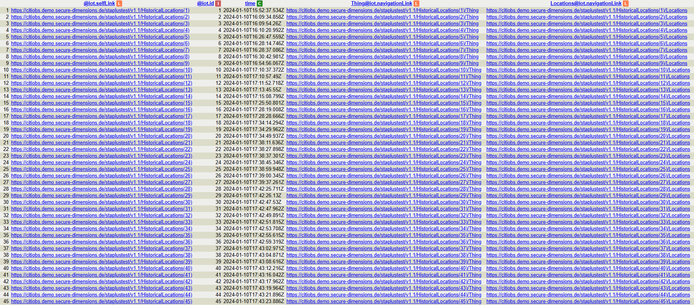
Double left-click on the node to open the dialog. By default, 100 records are retrieved from the STA service. Use this dialog to specify a higher number of records.
Recipes where this tool is used:
Licenses
As with any entity, to view the Licenses of an STA service, this tool must be connected directly to the STA service or to a related entity following the STA schema. If it is connected to another entity, that entity must contain only a single record. To achieve this, you can use the Select row, Filter rows, or Select resource tool.
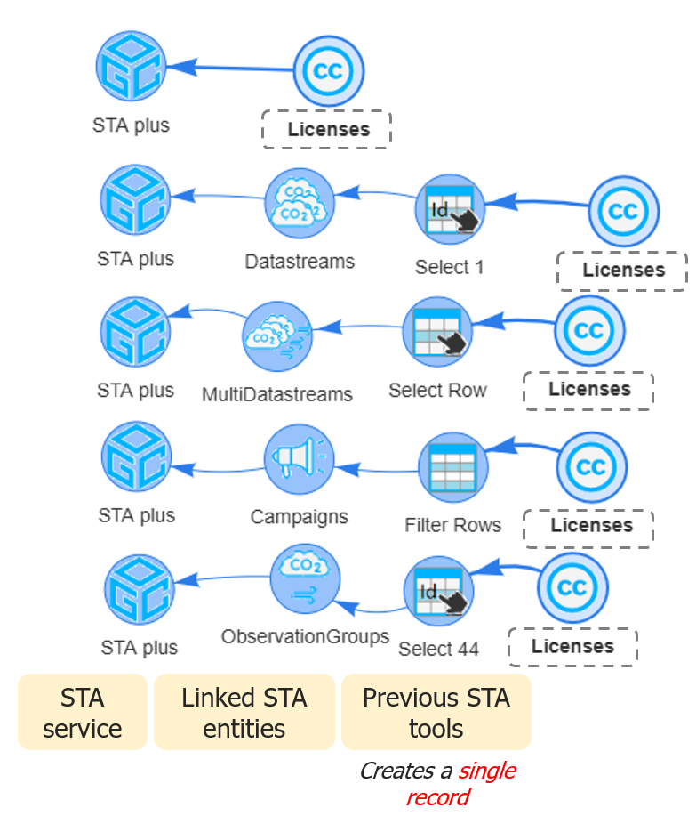
- Definition:
An agreement between a party and other parties to gain access and use primarily observations but also groups of observations and campaigns. The agreement can include clauses about data sharing, commercial use, modification rights, and attribution. Associating a license with a MultiDatastream or Datastream defines re-use conditions for all associated observations. Associating a license to an ObservationGroup or a Campaign defines their re-use conditions.
- Properties:
- name (string): required
- description (string): required
- observationType (string): required
- unitOfMeasurement (JSON): required
- observedArea (object): optional
- phenomenonTime (data_isoperiod): optional
- resultTime (data_isoperiod): optional
- properties (JSON): optional
- Linked with: Datastreams, MultiDatastreams, Campaigns, ObservationGroups
Here is an example of data returned by this node:
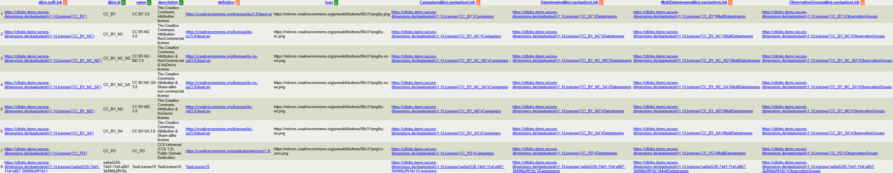
Double left-click on the node to open the dialog. By default, 100 records are retrieved from the STA service. Use this dialog to specify a higher number of records.
Recipes where this tool is used:
 Locations
Locations
As with any entity, to view the Locations of an STA service, this tool must be connected directly to the STA service or to a related entity following the STA schema. If it is connected to another entity, that entity must contain only a single record. To achieve this, you can use the Select row, Filter rows, or Select resource tool.
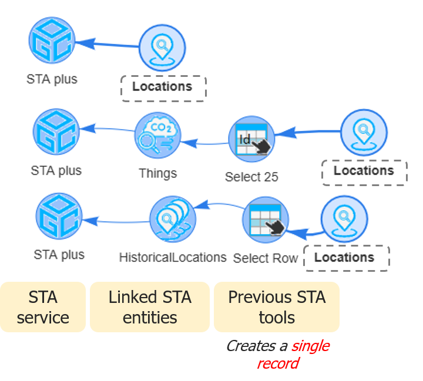
- Definition:The Location of a Thing represents its last known
physical
position. It
describes where the Thing is located in the real world, and this location is often the same
as
the location of
interest for the data it produces. In many IoT sensing scenarios, the Thing’s Location
matches
the
FeatureOfInterest of its Observations (for example, the room or building where a sensor
operates).
- Properties:
- name (string): required
- description (string): required
- encodingType (string): required
- location (geometry): required
- properties (JSON): optional
- Linked with: Things, HistoricalLocations
Here is an example of data returned by this node:
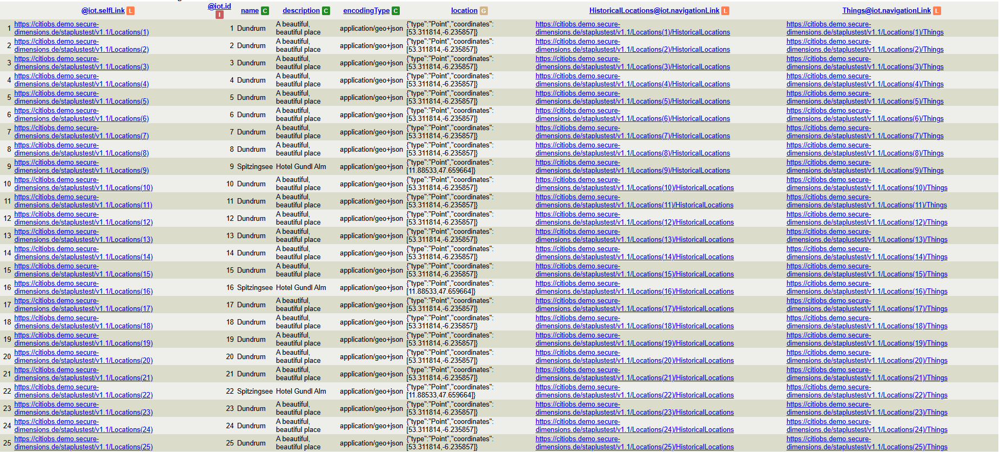
Double left-click on the node to open the dialog. By default, 100 records are retrieved from the STA service. Use this dialog to specify a higher number of records.
Recipes where this tool is used:
 MultiDatastreams
MultiDatastreams
As with any entity, to view the MultiDatastreams of an STA service, this tool must be connected directly to the STA service or to a related entity following the STA schema. If it is connected to another entity, that entity must contain only a single record. To achieve this, you can use the Select row, Filter rows, or Select resource tool.
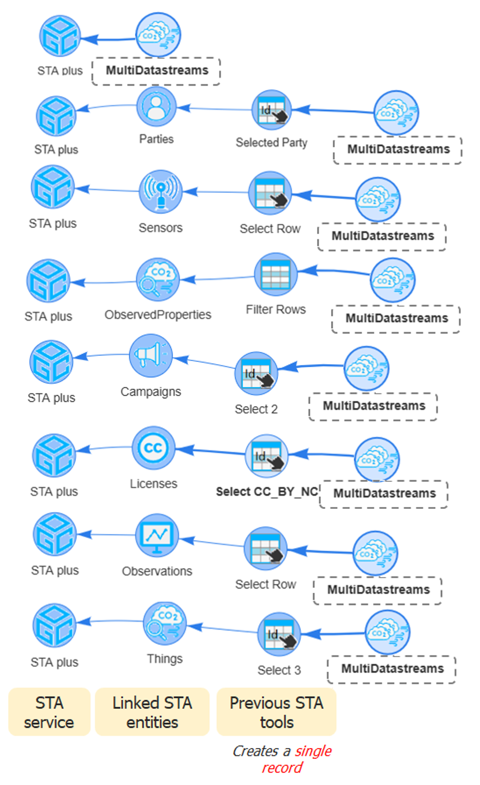
- Definition:In the context of the OGC SensorThings API, a
MultiDatastream
is a type of
datastream that groups multiple observed properties measured by a single Thing into one
stream,
where each
Observation returns a single structured result containing multiple values (an array), one
for
each observed
property measured at the same time. For example, a weather station measuring air
temperature,
relative humidity,
and atmospheric pressure would use a MultiDatastream so that each Observation returns a
combined
result such as
[22.5, 61.2, 1013.4], representing all measurements taken simultaneously
- Properties:
- name (string): required
- description (string): required
- observationType (string): required
- unitOfMeasurement (JSON): required
- observedArea (object): optional
- phenomenonTime (data_isoperiod): optional
- resultTime (data_isoperiod): optional
- multiObservationDataType (JSON): required
- properties (JSON): optional
- Linked with: Party, Sensor, ObservedProperty, Campaigns, License, Observations, Thing, Cells
Here is an example of data returned by this node:

Double left-click on the node to open the dialog. By default, 100 records are retrieved from the STA service. Use this dialog to specify a higher number of records.
Recipes where this tool is used:
No one yet
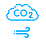
ObservationGroupsAs with any entity, to view the ObservationGroups of an STA service, this tool must be connected directly to the STA service or to a related entity following the STA schema. If it is connected to another entity, that entity must contain only a single record. To achieve this, you can use the Select row, Filter rows, or Select resource tool.
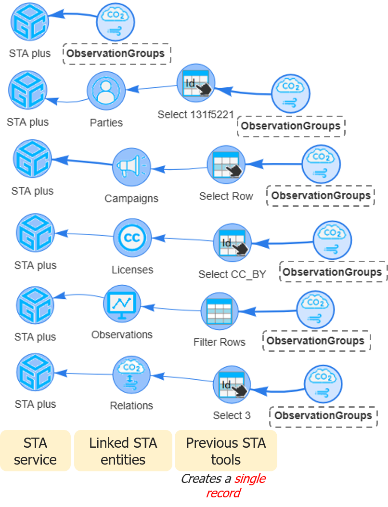
- Definition:
A collection of observations that are grouped together for a particular purpose.
- Properties:
- name (string): required
- description (string): required
- purpose (string): optional
- creationTime (isodatetime): optional
- endTime (isodatetime): optional
- termsOfUsed (string): optional
- privacyPolicy (string): optional
- dataQuality (JSON): optional
- properties (JSON): optional
- Linked with: Party, Campaigns, License, Observations, Relations
Here is an example of data returned by this node:

Double left-click on the node to open the dialog. By default, 100 records are retrieved from the STA service. Use this dialog to specify a higher number of records.
Recipes where this tool is used:
 Observations
Observations
As with any entity, to view the Observations of an STA service, this tool must be connected directly to the STA service or to a related entity following the STA schema. If it is connected to another entity, that entity must contain only a single record. To achieve this, you can use the Select row, Filter rows, or Select resource tool.
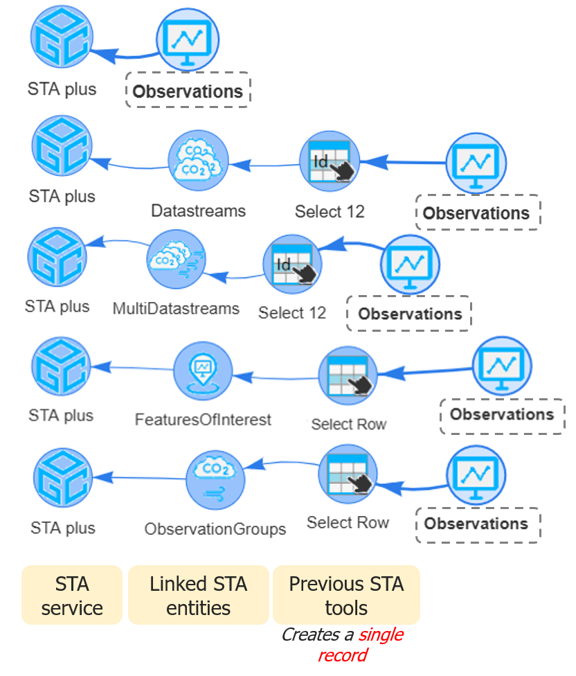
- Definition: An Observation is an event carried out by a Sensor that
produces a result
which is an estimate of an ObservedProperty of a FeatureOfInterest. For example, a
temperature
sensor installed
in a room performs an Observation at a specific time and returns a value such as 22.5 °C,
which
is an estimate
of the air temperature (ObservedProperty) of that room (FeatureOfInterest)
- Properties:
- phenomenonTime (object): required
- resultTime (isodatetime): required
- result (): required
- resultQuality (object): optional
- validTime (data_isoperiod): optional
- parameters (JSON): optional
- Linked with: Datastream, MultiDatastream, FeatureOfInterest, ObservationGroups, Cells, Subjects, Objects
Here is an example of data returned by this node:

Double left-click on the node to open the dialog. By default, 100 records are retrieved from the STA service. Use this dialog to specify a higher number of records.
Recipes where this tool is used:
 ObservedProperties
ObservedProperties
As with any entity, to view the ObservedProperties of an STA service, this tool must be connected directly to the STA service or to a related entity following the STA schema. If it is connected to another entity, that entity must contain only a single record. To achieve this, you can use the Select row, Filter rows, or Select resource tool.

- Definition:In the context of the OGC SensorThings API, an
ObservedProperty is a concept
that describes what is being measured or observed by a Sensor in an Observation. It defines
the
phenomenon of
interest (for example, temperature, humidity, or pressure) that the Sensor is capable of
estimating.
For example, a weather station might have ObservedProperties such as “air temperature”,
“relative humidity”, and
“atmospheric pressure”, where each Observation produced by the Sensor provides a value
corresponding to one of
these properties
- Properties:
- name (string): required
- definition (URI): required
- description (string): required
- properties (JSON): optional
- Linked with: Datastreams, MultiDatastreams
Here is an example of data returned by this node:
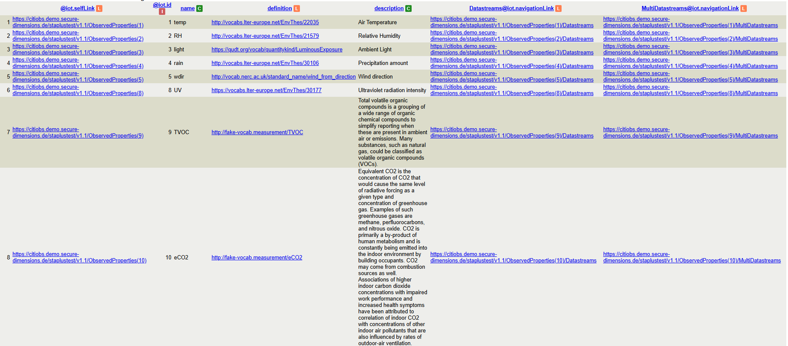
Double left-click on the node to open the dialog. By default, 100 records are retrieved from the STA service. Use this dialog to specify a higher number of records.
Recipes where this tool is used:
 Parties
Parties
As with any entity, to view the Parties of an STA service, this tool must be connected directly to the STA service or to a related entity following the STA schema. If it is connected to another entity, that entity must contain only a single record. To achieve this, you can use the Select row, Filter rows, or Select resource tool.

- Definition:
A user interacting with the service, facilitating the creation of observations and managing owned resources. A party can own a thing, decide on the license of a datastream, manage a campaign, be responsible for an observation group, etc.
- Properties:
- description (string): optional
- authId (string): optional
- role (PartyRoleCode): required
- displayName (string): optional
- Linked with: Datastreams, MultiDatastreams, Campaigns, ObservationGroups, Things
Here is an example of data returned by this node:
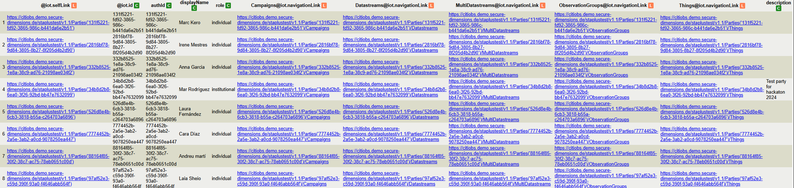
Double left-click on the node to open the dialog. By default, 100 records are retrieved from the STA service. Use this dialog to specify a higher number of records.
Recipes where this tool is used:
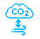
RelationsAs with any entity, to view the Relations of an STA service, this tool must be connected directly to the STA service or to a related entity following the STA schema. If it is connected to another entity, that entity must contain only a single record. To achieve this, you can use the Select row, Filter rows, or Select resource tool.
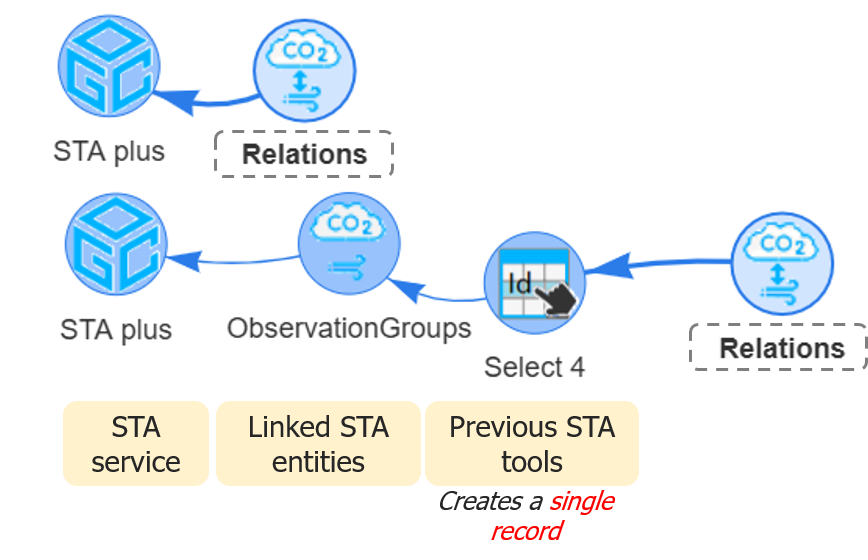
- Definition:
A relationship established between two observations or between an observation and an external resource for a particular reason.
- Properties:
- role (URI): required
- description (string): optional
- externalObject (URI): optional
- properties (JSON): optional
- Linked with: Object, Subject, ObservationGroups
Object and Subject are not yet implemented
Here is an example of data returned by this node:
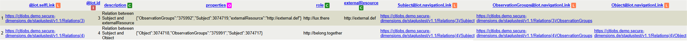
Double left-click on the node to open the dialog. By default, 100 records are retrieved from the STA service. Use this dialog to specify a higher number of records.
Recipes where this tool is used:
No one yet
 Sensors
Sensors
As with any entity, to view the Sensors of an STA service, this tool must be connected directly to the STA service or to a related entity following the STA schema. If it is connected to another entity, that entity must contain only a single record. To achieve this, you can use the Select row, Filter rows, or Select resource tool.
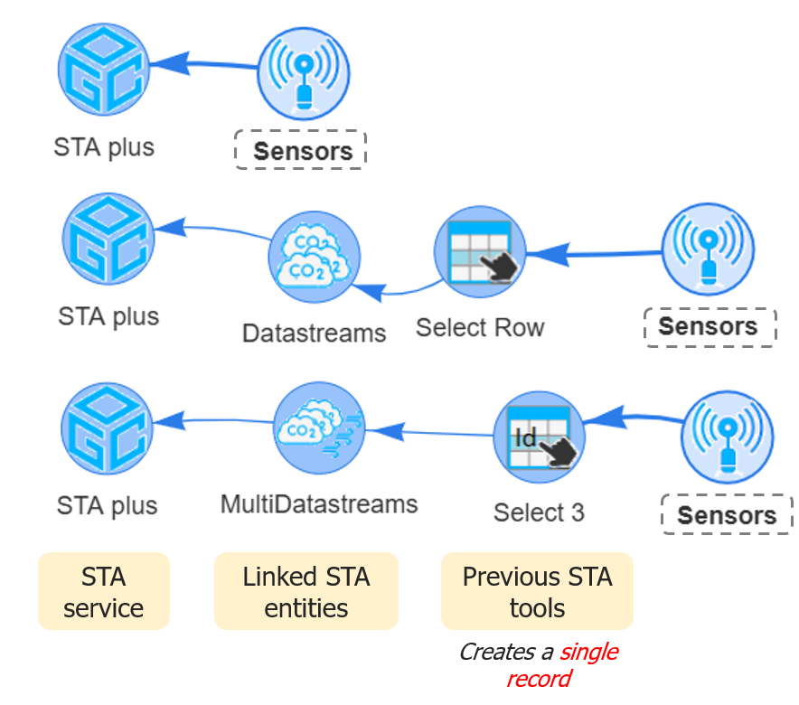
- Definition:A sensor is an instrument that observes a property or
phenomenon with the
goal of producing an estimate of the value of that property.
For example, a temperature sensor measures the air temperature and returns a numerical value
such as 23.4 °C.
Another example is a heart rate sensor in a smartwatch, which measures a person’s pulse and
provides values such
as 72 beats per minute (bpm)
- Properties:
- name (string): required
- description (string): required
- encodingType (string): required
- metadata (): required
- properties (JSON): optional
- Linked with: Datastreams, MultiDatastreams
Here is an example of data returned by this node:
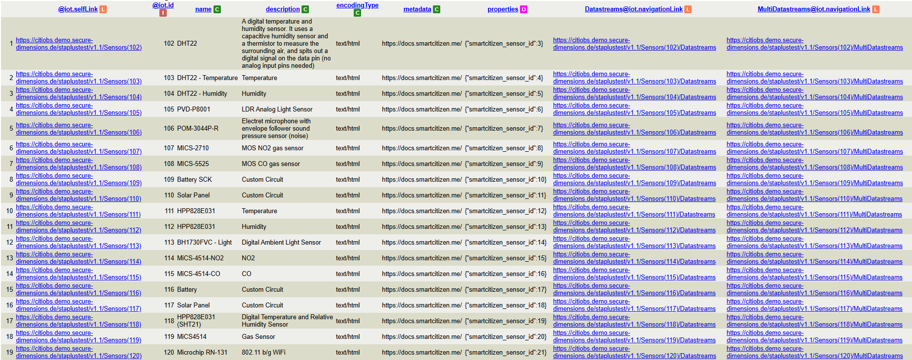
Double left-click on the node to open the dialog. By default, 100 records are retrieved from the STA service. Use this dialog to specify a higher number of records.
Recipes where this tool is used:
 Things
Things
As with any entity, to view the Things of an STA service, this tool must be connected directly to the STA service or to a related entity following the STA schema. If it is connected to another entity, that entity must contain only a single record. To achieve this, you can use the Select row, Filter rows, or Select resource tool.
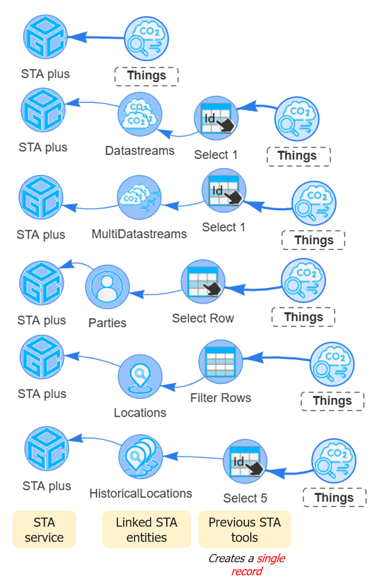
- Definition:A Thing is a real-world or digital entity that is
uniquely
identifiable
within the system and that can have properties and be associated with sensors and
observations.
It represents
the object being modeled in the IoT environment.
For example, a weather station installed on a building is considered a Thing because it
represents a physical
asset that hosts multiple sensors (such as temperature and humidity sensors) and generates
observations. Another
example is a smartwatch, which is also a Thing because it is a device with a unique identity
that can contain
sensors like a heart rate sensor and an accelerometer
- Properties:
- name (string): required
- description (string): required
- properties (JSON): optional
- Linked with: Datastreams, MultiDatastreams, Party, Locations, HistoricalLocations
Here is an example of data returned by this node:
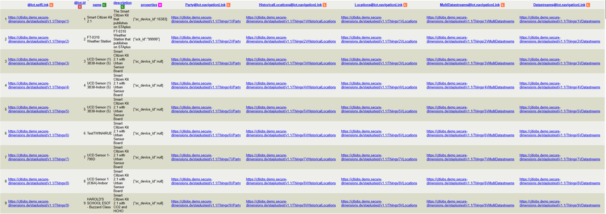
Double left-click on the node to open the dialog. By default, 100 records are retrieved from the STA service. Use this dialog to specify a higher number of records.
Recipes where this tool is used: